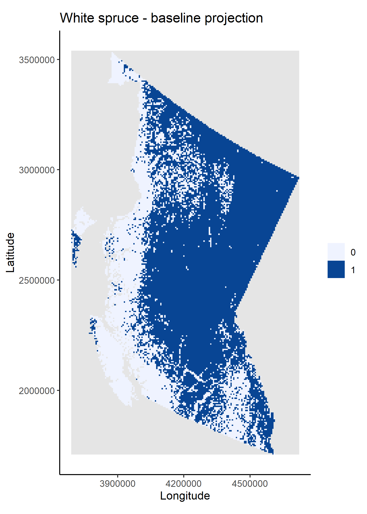
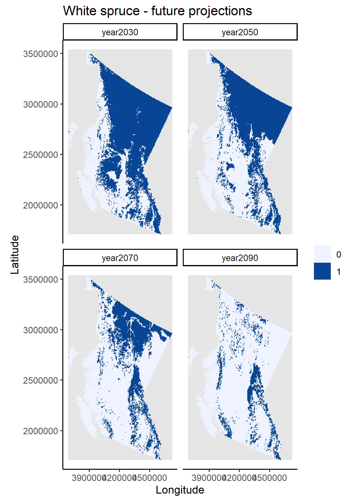

## an assertion:
if (getRversion() < "4.3") {
warning(paste("This workflow was build using R v4.3.0;",
"it is recommended you update your R version to v4.3.0 or above"))
}Example of a reproducible workflow in R
Introduction
Repeatable, Reproducible, Reusable and Transparent (R^3T) workflows are becoming more and more commonly used in academic and non-academic settings to ensure that analyses and their outputs can be verified and repeated by peers, stakeholders and even the public. As such, (R^3T) promote trust within the scientific community and between scientists, stakeholders, end-users and the public. R^3T are also fundamental for model benchmarking, conducting meta-analyses and facilitating building-on and improving current scientific methods, especially those involving statistical and non-statistical modelling.
In the ecological domain, R^3T are gaining traction, but many of us struggle at the start, not knowing where to begin. This example will take you through setting up an R^3T workflow for a common analysis in ecology, species distribution modelling.
The workflow has been kept as simple as possible, while following a few common guidelines that facilitate building R^3T workflows:
Scripting;
Minimising no. software/languages used;
Modularising & “functionising”;
Centralising the workflow in a single script;
Using a self-contained & project-oriented workflow;
Using version control;
Using (minimal) integrated testing.
It also relies on two important packages that enable reproducibility and speed up subsequent runs (i.e. re-runs) the workflow in the same machine:
Require(McIntire 2023) - for self-contained and reproducibleRpackage installation;reproducible(McIntire and Chubaty 2023) - for caching, establishing explicit links to raw data, common GIS operations, and more.
However, please note that there are numerous other R packages (as well as other languages and types of software) that facilitate and support R^3T workflows. This is simply an example using some of the tools that I use when building my workflows.
The workflow at a glance
In this example, I use a simple statistical framework to predict climate-driven range changes of white spruce (Picea glauca), a common tree species in Canada. It should, by no means, be interpreted as a good way to project changes in the actual distributions of white spruce, which will likely involve many more drivers and ecological processes than the ones included here.l
To keep the example simple, I focused on white spruce distribution changes within the province of British Columbia (BC) in response to variation in four bioclimatic predictors (obtained from WorldClim, Fick and Hijmans 2017):
BIO1 - Annual Mean Temperature;
BIO4 - Temperature Seasonality;
BIO12 - Annual Precipitation;
BIO15 - Precipitation Seasonality.
The baseline white spruce distribution for BC was obtained from the 2011 species % cover maps by Beaudoin et al. (2014), freely available at the Canadian National Forest Inventory database. The baseline values for each bioclimatic variable corresponded to projections for the normal climate period of 1970-2010 (hereafter, 2010), while future values where obtained from projections for the periods 2021-2040 (2030), 2041-2060 (2050), 2061-2080 (2070) and 2081-2100 (2090), using the CanESM5 General Circulation Model and the SSP 585 emissions scenario.
In this workflow, I use a single random forest model (randomForest package, Liaw and Wiener 2002) to model white spruce range changes as a function of the four bioclimatic variables.
All steps from sourcing and formatting the data, to evaluating and plotting model results, are integrated in the workflow as a sequence of sourced scripts. This method was chosen as it is likely closer to the way most of us learn of to use R. However, other approaches could also be used, for instance:
converting existing scripts to single or multiple functions called from the controller script (see Running the workflow);
adapting scripts to
SpaDES(Chubaty and McIntire 2019, see the SpaDES4Dummies guide) modules and usingSpaDESto execute the workflow;using
targets(see Brousil et al. 2023) to execute the workflow;and more…
The degree to which a workflow developer will encapsulate code into separate scripts, functions or modules/components of an automated workflow using packages like SpaDES/targets, will to some level depend on individual preference and the end users of the workflow. For many “typical” users of R (at least in ecology) it feels strange or even hard to break up a workflow into different scripts/functions/etc. and some have told me they feel it’s “harder to debug and understand a script if I can’t see it easily”. However, before you decide to leave lots of code in your “main” (or controller) script I urge you to think about:
Why are you leaving the code there? Is it absolutely essential to understand that piece to execute the workflow or understand the outputs? Or it is something like a data preparation step that is meaningless for interpretation and therefore could be put in the background away?
Who is going to use your script? Only you? If so, you should know all the pieces and can keep the controller script neat and tidy for production runs. Or do you have teaching in mind and therefore want a longer script that could be easier for “R newbies” – for instance, in the workflow below I left the package installation steps in the controller script because I wanted to make sure you saw them. If your end-user is someone like a stakeholder, they may also not care as much about the workflow details as you do, and a simpler, cleaner script may be easier to run and be last prone to error (e.g. forgetting to run a line).
If your problem is debugging, please see Debugging for tips that will make your life easier and potentially remove the necessity of very long scripts containing both function definitions and function calls.
Step by step
Project structure and dependencies
A workflow should start with the initial set-up necessary to execute all operations. In R this mostly concerns the R version, setting up project directories and package installation and loading. Other examples are options() (set afterwards in this workflow – Functions, options and study area) or any necessary system variables (not used here).
Note that in self-contained workflows all packages should be installed at the project level to avoid conflicts with (or changing) the system and/or user R library.
## package installation with Require
## create project folder structure
projPaths <- list("pkgPath" = file.path("packages", version$platform,
paste0(version$major, ".", strsplit(version$minor, "[.]")[[1]][1])),
"cachePath" = "cache",
"codePath" = "code",
"dataPath" = "data",
"figPath" = "figures",
"outputsPath" = "outputs")
lapply(projPaths, dir.create, recursive = TRUE, showWarnings = FALSE)
## set R main library to project library
.libPaths(projPaths$pkgPath)I use Require to install all necessary packages. Require can install a mix of CRAN and GitHub packages, and accepts specification of minimum package versions (see ?Require). For simplicity sake, this example uses the latest versions of each package from CRAN.
Another advantage of using Require is that it can save a “package snapshot” (i.e. the state of an R library at a particular time) and use it at a later date to install packages using the versions (and sources - CRAN or GitHub) specified in the snapshot file. This ensures that the same library state can be recreated in the future or on another machine.
To demonstrate this, and because it is an essential piece of workflow reproducibility, the code below shows both the initial package installation and saving of the snapshot file – commented to avoid unintended package/snapshot updates during subsequent runs – and package installation using the snapshot file.
/!\ You will need an active internet connection to run (or re-run) the package installation lines /!\
## install specific versions of packages
installRequire <- !"Require" %in% rownames(installed.packages())
installRequire <- if (!installRequire) packageVersion("Require") < "0.3.0" else installRequire
if (installRequire) {
install.packages("Require", dependencies = TRUE)
}
library(Require)
## this may take a while.
## Notes for Windows users: failure occurs often because the OS can "hold" on to folders.
## Don't despair. Restart R session, close all other sessions and run the script up to
## this point again.
# loadOut <- Require(c("data.table", "dismo",
# "ggplot2", "httr", "maps",
# "randomForest",
# "rasterVis", "reproducible",
# "terra"),
# standAlone = TRUE)
## eventually we would save the library state in a package snapshot file
pkgSnapshotFile <- file.path(projPaths$pkgPath, "pkgSnapshot.txt")
# pkgSnapshot(
# packageVersionFile = file.path(projPaths$pkgPath, "pkgSnapshot.txt"),
# libPaths = projPaths$pkgPath, standAlone = TRUE
# )
## and replace the above Require() call with
Require(packageVersionFile = pkgSnapshotFile,
standAlone = TRUE,
libPaths = projPaths$pkgPath,
upgrade = FALSE, require = FALSE)
Require(c("data.table", "dismo",
"ggplot2", "httr", "maps",
"randomForest",
"rasterVis", "reproducible",
"terra"),
install = FALSE)install.packages("Require", dependencies = TRUE)
library(Require)
Require(c("data.table", "dismo",
"ggplot2", "httr", "maps",
"randomForest",
"rasterVis", "reproducible",
"terra"),
standAlone = TRUE)In some Windows machines the package installation lines above may have to be run multiple times, with R session “refreshes” between them. This is because, Windows often “holds on” to temporary folders created during package installation, preventing R from manipulating these folders and causing installation failures. I’m afraid you’ll simply have to be patient here.
Running the workflow
The workflow presented here is relatively simple. It has been broken down into a series of .R scripts sourced in sequence. In the past, I found this to be the most intuitive way of learning how to shift from my spaghetti code into something structured and more robust. However, there are many other ways in which the workflow could have been set up. For instance, each of the scripts could be turned into a function and the functions called here; or packages like SpaDES and targets could be used to set and manage the workflow (see The workflow at a glance). The choice will depend on project complexity and on the level of programming proficiency of the developer, among other factors.
## workflow functions/options and study area
source(file.path(projPaths$codePath, "miscFuns.R"))
source(file.path(projPaths$codePath, "setup.R"))
## download data
source(file.path(projPaths$codePath, "climateData.R"))
source(file.path(projPaths$codePath, "speciesData.R"))
## fit SDM
source(file.path(projPaths$codePath, "fitSDM.R"))
## obtain projections
source(file.path(projPaths$codePath, "projections.R"))Functions, options and study area
The first script, miscFuns.R, contains several functions used across other scripts. It is good practice to document functions – what they do, what parameters they expect, and what packages they depend on. As in many R packages, I use the roxygen2 format, where function documentation is preceded by #' and documentation fields are noted by a @. Please see this quickstart guide to roxygen2 to learn more.
Here’s an example taken from one of the functions in miscFuns.R:
#' Plot a `SpatRaster` as a `ggplot`
#'
#'
#' @param ras a SpatRaster layer
#' @param title character. Plot title
#' @param xlab character. X-axis title
#' @param ylab character. Y-axis title
#' @param isDiscrete logical. Should raster data be treated as discrete
#' or continuous for plotting? If `TRUE` plots will be accompanied with
#' a colour legend and only existing values. Otherwise, a continuous
#' colourbar is shown (default).
#'
#' @return a `ggplot`.
#'
#' @importFrom rasterVis gplot
#' @importFrom ggplot2 geom_tile scale_fill_brewer coord_equal theme_bw
plotSpatRaster <- function(ras, plotTitle = "", xlab = "x", ylab = "y", isDiscrete = FALSE) {
...
}The second script of the workflow, setup.R, prepares the study area and sets some global options(). Notice that at the end of this (and other) script(s) I remove objects that are no longer necessary. Although this workflow will not demand a lot of memory, it is good practice to avoid spending memory resources on useless objects and cluttering the environment where the workflow is running – in this case the .GlobalEnv.
Data sourcing and preparation
The second and third scripts, climateData.R and speciesData.R, source and prepare bioclimatic data layers and the white spruce percent cover layer (later converted to presence/absence values) necessary to fit the species distribution model (SDM) and to project changes in species distributions. To ensure that the workflow is reproducible and transparent, I have used FAIR data (Wilkinson et al. 2016) explicitly linked to the workflow and prepared on-the-fly by the prepInputs function (reproducible package).
prepInputs downloads the data from the specified URL and when the data is a spatial layer it can crop it and re-project it to match another spatial layer (the studyAreaRas created in setup.R). It will only download the data once and uses internal caching to speed up subsequent runs with the same inputs (e.g. same input data layer and study area). You will also note that I have used outer Cache calls (also from the reproducible package) for further speed up subsequent workflow runs (see Caching).
These data preparation scripts save plots of the final climate and species distribution data layers.
Analytical steps - model fitting, validation and projections
The scripts fitSDM.R and projections.R fit, validate and use a random forest (RF) model that relates baseline (from 2011) white spruce presences and absences (derived from the input percent cover raster layer) to the four bioclimatic variables. The model is fit on 80% of the data and tested on the remaining 20% – note the use of set.seed() to ensure that the data partitioning is repeatable.
I used tools from the dismo package to create the training and testing data partitions, to evaluate the model and to predict changes in white spruce distributions under projected climate conditions for 2030, 2050, 2070 and 2090. I also used Cache again to avoid refitting and re-evaluating the model if inputs are not changed.
Outputs
The workflow’s outputs are the RF model object, its evaluation results and plots of the raster layer projections. Instead of creating a separate script to save outputs to disk, I have embedded these operations within each script. I prefer saving outputs as they are being created, but in this case this is more a matter of personal taste. In very long workflows, however, it is advisable to save outputs as they are created to avoid losing work should there be a failure preventing workflow completion. See additional notes on Saving.


And voilà!
That’s it!
I now invite you to make further changes to the workflow. Some ideas are to make it so that you can control certain inputs (e.g. climate scenarios and periods) from the controller script, or turning the existing scripts into functions, or even using other workflow structures and packages like SpaDES and targets, which are beyond the scope of this example (but see SpaDES4Dummies guide and Brousil et al. 2023).
I hope this minimal example has given useful tools and ideas that will help you create R^3T workflows and enhance your existing work with these principles.
A note on…
Debugging
How many of you have created the arguments of a “problematic” function as objects on your .GlobalEnv to then execute a copy-pasted version of the said function line by line? If I had to guess I’d say too many! And I was doing that too – because there are too many R things we don’t learn on that stats. course in uni! But there are FAR better ways of debugging in R. Two common ones are to:
1. place a browser() call on your “problematic” function
plotSpatRaster <- function(ras, plotTitle = "", xlab = "x", ylab = "y", isDiscrete = FALSE) {
plotOut <- gplot(ras) +
geom_tile(aes(fill = value))
plotOut <- if (isDiscrete) {
vals <- na.omit(unique(as.vector(ras[])))
plotOut +
scale_fill_distiller(palette = "Blues", direction = 1,
na.value = "grey90", guide = "legend",
breaks = vals, limits = vals)
} else {
plotOut +
scale_fill_distiller(palette = "Blues", direction = 1, na.value = "grey90")
}
browser() ## debugging mode will start here, once the function is executed
plotOut +
theme_classic() +
coord_equal() +
labs(title = plotTitle, x = xlab, y = ylab, fill = "")
}2. to use debug(<function_name>) and debugOnce(<function_name>) to execute the function in debugging mode (like putting a browser() call right at the start of the function):
debugOnce(plotSpatRaster)
plotSpatRaster(ras) ## the entire function will executed in debuging mode, only once
debug(plotSpatRaster) ## always execute in debugging mode
plotSpatRaster(ras)
undebug(plotSpatRaster) ## stop debuggingThese two functions will enable you to “enter” the function environment as it’s being executed and have access to the objects/arguments that the function “sees”, making debugging SO much easier.
Caching
Caching has been my life saviour for many years now. When you do a lot of coding and your code takes a while to run, debugging and development can become very slow (and frustrating) if you need to wait many minutes (many times) to get to the point of interest in the code. To avoid this, many of us are actually doing “manual” caching – we are saving intermediate objects to disk, checking whether they exist and when they do, bypassing re-running computations and loading them into R.
The problem is that this is not a robust solution – it is not sufficient to check whether the outputs exist – and others (i.e. computer programmers) have had more elegant solutions for a while. Cache (reproducible package) makes these elegant solutions easy to use by non-computer-scientists. On the first run of a function call, Cache will save its outputs and sufficient information about the function’s inputs and code. When the function call is run a second time, Cache will first check whether the outputs have been cached (i.e. saved), and whether the inputs and code have changed, and load the saved outputs if they haven’t.
As with most solutions, there are always trade-offs to consider. The first is a time trade-off. If the call being cached is very fast to run, the extra time used for caching, checking and loading will probably not compensate. One thing to consider is to not cache very large inputs (i.e. the objects passed to arguments) of a function (see omitArgs argument of Cache), as they will take longer to digest. Instead pass a smaller object that is unique to the large object to the cacheExtra argument.
system.time(Cache(runif, n = 10))
system.time(runif(n = 10)) ## will always be fasterThe second is disk space. If you have very limited disk space, it may not be a good idea to cache several large intermediate files, as your disk may be filled up quickly, especially when working across many projects. Solutions are to only cache the slowest steps or to turn caching off (see useCache argument of Cache) in situations when you know disk spade will be limited (e.g. sharing your code with someone working with a small disk).
Saving
As a rule of thumb, I avoid saving multiple objects in a single file (e.g. an .RData or .rda file), as it can reduce workflow robustness – if that file becomes corrupted several pieces or outputs of the workflow may be lost. Instead, I recommend saving/loading single objects as .rds or .qs (from qs package) files (see ?saveRDS and ?readRDS and ?qs::qsave and ?qs::qread). Cache will, by default, use the .rds format, but it is possible to opt for the .qs format by setting options("reproducible.cacheSaveFormat" = "qs"). The advantages of using .qs are a higher compression rate and faster read/write speeds, the disadvantage is that your workflow will depend on an extra package.
Acknowledgements
I would like to acknowledge all participants (guinea-pigs, *ahem*) of the ‘Coding SOS: Reproducible workflows, GitHub, and R Open Mic’ workshop of the 2023 BES Macroecology SIG meeting, Birmingham UK, who through their curiosity and thoughtful questions have helped improve the contents of this example workflow.
References
Beaudoin, A., P. Y. Bernier, L. Guindon, P. Villemaire, X. J. Guo, G. Stinson, T. Bergeron, S. Magnussen, and R. J. Hall. 2014. “Mapping Attributes of Canada’s Forests at Moderate Resolution Through k NN and MODIS Imagery.” Canadian Journal of Forest Research 44 (5): 521–32. https://doi.org/10.1139/cjfr-2013-0401.
Brousil, Matthew R., Alessandro Filazzola, Michael F. Meyer, Sapna Sharma, and Stephanie E. Hampton. 2023. “Improving Ecological Data Science with Workflow Management Software.” Methods in Ecology and Evolution 14 (6): 1381–88. https://doi.org/10.1111/2041-210X.14113.
Chubaty, Alex M., and Eliot J. B. McIntire. 2019. SpaDES: Develop and Run Spatially Explicit Discrete Event Simulation Models. https:// CRAN.R-project.org/package=SpaDES.
Fick, Stephen E., and Robert J. Hijmans. 2017. “WorldClim 2: New 1-Km Spatial Resolution Climate Surfaces for Global Land Areas.” International Journal of Climatology 37 (12): 4302–15. https://doi.org/10.1002/joc.5086.
Liaw, Andy, and Matthew Wiener. 2002. “Classification and Regression by randomForest” 2: 18–22. https://CRAN.R-project.org/doc/Rnews/.
McIntire, Eliot J B. 2023. “Require: Installing and Loading r Packages for Reproducible Workflows.” https://CRAN.R-project.org/package=Require.
McIntire, Eliot J B, and Alex M Chubaty. 2023. “Reproducible: Enhance Reproduciblity of r Code.” https://reproducible.predictiveecology.org.
Wilkinson, Mark D., Michel Dumontier, IJsbrand Jan Aalbersberg, Gabrielle Appleton, Myles Axton, Arie Baak, Niklas Blomberg, et al. 2016. “The FAIR Guiding Principles for Scientific Data Management and Stewardship.” Scientific Data 3 (1): 160018. https://doi.org/10.1038/sdata.2016.18.